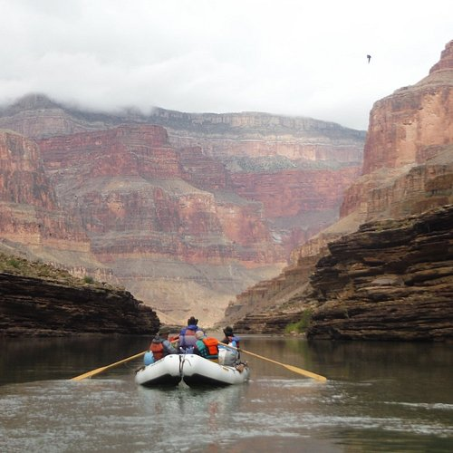
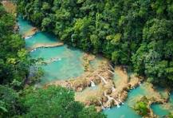
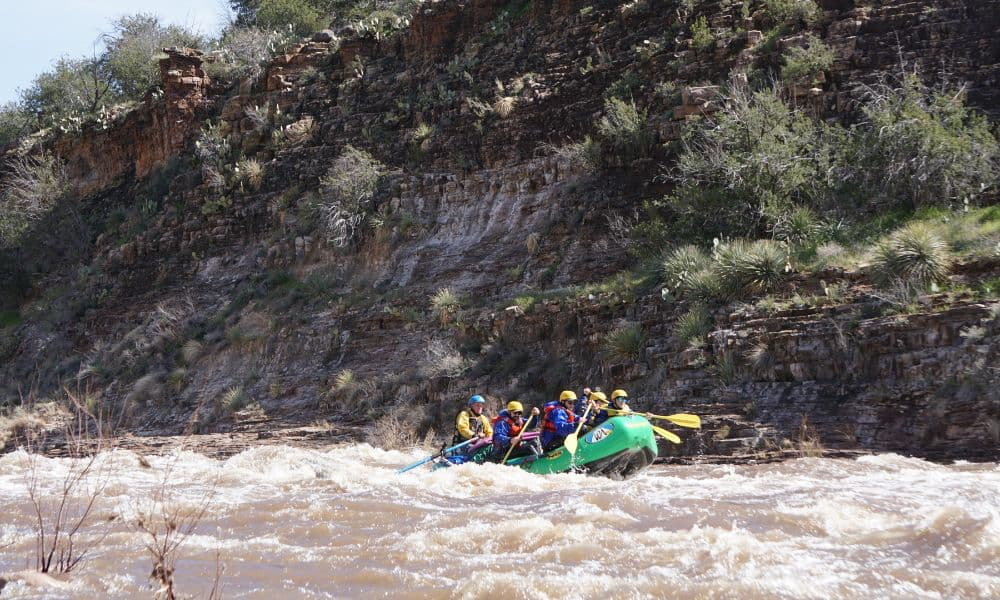

Call Us Now and Start Your Adventure!
Colorado River

The Colorado River offers some of the most iconic rafting experiences in the Western U.S. Enjoy a single day of smooth waters down beautiful river gorges, or take on the white waters for our 3 days trips! All trips begin on Horseshoe Bend. Rafting equipment provided on site.
Verde River
Want some seasonal excitment? Enjoy the Rock Garden rapids! Challenge the Off the Wall waters! We offer multi-day expeditions with some of our best tour guides, who will start the trip from Camp Verde, and finish each day with our famous prickly pear BBQ! Rafting equipment rent available.

Salt River

Come spring time, and you can experience for yourself the desert canyon rapids that this river offers! Our guides swear that you will never forget those canyon sites! All trips will begin via shuttle from East Valley and then by Jeep to the bank of the Salt River. Rafting equipment rent available.
| Trip | Availability | Start Time | Guest Min. |
|---|---|---|---|
| Colorado River | 3/1 - 5/15 | 5:30 am | 7 |
| 5/29 - 8/15 | 5:30 am | 8 | |
| 8/30 - 10/1 | 6:30 am | 5 | |
| Verde River | 4/1 - 6/20 | 5:30 am | 7 |
| 6/29 - 8/30 | 5:30 am | 8 | |
| Salt River | 3/1-5/20 | 5:30 am | 6 |